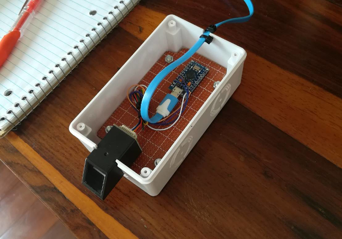
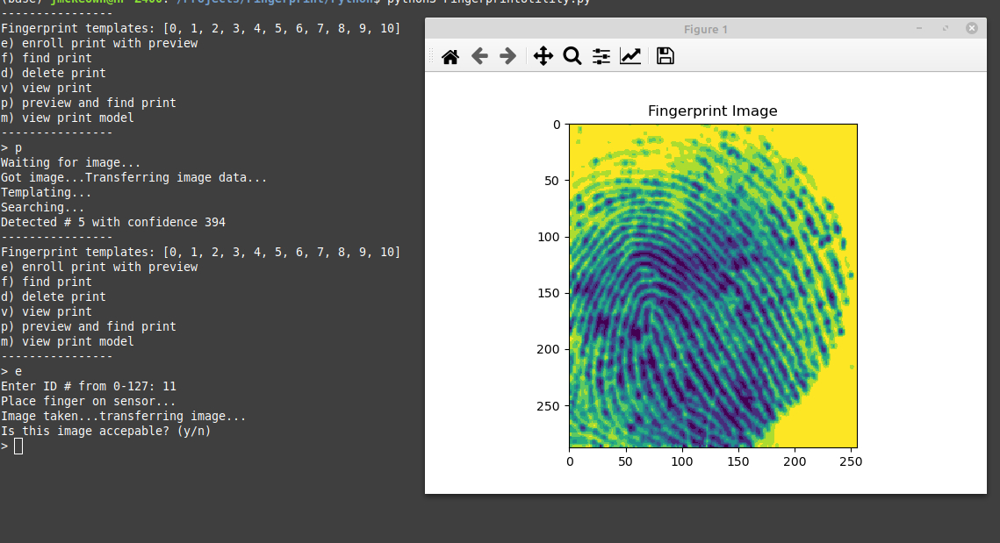
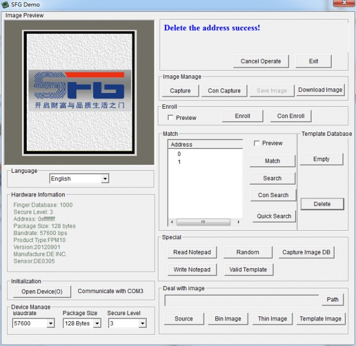

Fingerprint scanner used to automatically send stored passwords to a PC as a second USB keyboard. Uses fingerprint scan module AS608 from Adafruit and Arduino Pro Micro, 3.3 Volt, 8 MHz version.
There is also a command line utility included in this project that runs under Linux. Functionality is similar to that of SFG Demo including image viewing. SFG Demo is a closed-source Windows application and does not run under Linux.


06 May 2023